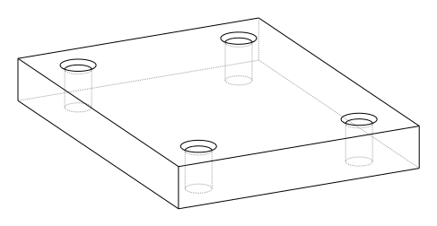

Tips, Best Practices and FAQ
Although there are countless ways to create objects with build123d, experience has proven that certain techniques can assist designers in achieving their goals with the greatest efficiency. The following is a description of these techniques.
Can’t Get There from Here
Unfortunately, it’s a reality that not all parts described using build123d can be
successfully constructed by the underlying CAD core. Designers may have to
explore different design approaches to get the OpenCascade CAD core to successfully
build the target object. For instance, if a multi-section sweep()
operation fails, a loft() operation may be a viable alternative
in certain situations. It’s crucial to remember that CAD is a complex field and
patience may be required to achieve the desired results.
2D before 3D
When creating complex 3D objects, it is generally best to start with 2D work before moving on to 3D. This is because 3D structures are much more intricate, and 3D operations can be slower and more prone to failure. For designers who come from a Constructive Solid Geometry (CSG) background, such as OpenSCAD, this approach may seem counterintuitive. On the other hand, designers from a GUI BREP CAD background, like Fusion 360 or SolidWorks, may find this approach more natural.
In practice, this means that 3D objects are often created by applying operations like
extrude() or revolve() to 2D sketches, as shown below:
with BuildPart() as my_part:
with BuildSketch() as part_profile:
...
extrude(amount=some_distance)
...
With this structure part_profile may have many objects that are combined and
modified by operations like fillet() before being extruded
to a 3D shape.
Delay Chamfers and Fillets
Chamfers and fillets can add complexity to a design by transforming simple vertices or edges into arcs or non-planar faces. This can significantly increase the complexity of the design. To avoid unnecessary processing costs and potential errors caused by a needlessly complicated design, it’s recommended to perform these operations towards the end of the object’s design. This is especially true for 3D shapes, as it is sometimes necessary to fillet or chamfer in the 2D design phase. Luckily, these 2D fillets and chamfers are less likely to fail than their 3D counterparts.
Parameterize
One of the most powerful features of build123d is the ability to design fully parameterized parts. While it may be faster to use a GUI CAD package for the initial iteration of a part, subsequent iterations can prove frustratingly difficult. By using variables for critical dimensions and deriving other dimensions from these key variables, not only can a single part be created, but a whole set of parts can be readily available. When inevitable change requests arise, a simple parameter adjustment may be all that’s required to make necessary modifications.
Use Shallow Copies
As discussed in the Assembly section, a shallow copy of parts that are repeated in your design can make a huge difference in performance and usability of your end design. Objects like fasteners, bearings, chain links, etc. could be duplicated tens or even hundreds of times otherwise. Use shallow copies where possible but keep in mind that if one instance of the object changes all will change.
Object Selection
When selecting features in a design it’s sometimes easier to select an object from higher up in the topology first, then select the object from there. For example let’s consider a plate with four chamfered holes like this:
When selecting edges to be chamfered one might first select the face that these edges belong to then select the edges as shown here:
from build123d import *
svg_opts = {"pixel_scale": 5, "show_axes": False, "show_hidden": True}
length, width, thickness = 80.0, 60.0, 10.0
hole_dia = 6.0
with BuildPart() as plate:
Box(length, width, thickness)
with GridLocations(length - 20, width - 20, 2, 2):
Hole(radius=hole_dia / 2)
top_face: Face = plate.faces().sort_by(Axis.Z)[-1]
hole_edges = top_face.edges().filter_by(GeomType.CIRCLE)
chamfer(hole_edges, length=1)
Build123d - CadQuery Integration
As both CadQuery and build123d use
a common OpenCascade Python wrapper (OCP) it’s possible to
interchange objects both from CadQuery to build123d and vice-versa by transferring the wrapped
objects as follows (first from CadQuery to build123d):
import build123d as b3d
b3d_solid = b3d.Solid.make_box(1,1,1)
... some cadquery stuff ...
b3d_solid.wrapped = cq_solid.wrapped
Secondly, from build123d to CadQuery as follows:
import build123d as b3d
import cadquery as cq
with b3d.BuildPart() as b123d_box:
b3d.Box(1,2,3)
cq_solid = cq.Solid.makeBox(1,1,1)
cq_solid.wrapped = b123d_box.part.solid().wrapped
Self Intersection
Avoid creating objects that intersect themselves - even if at a single vertex - as these topologies
will almost certainly be invalid (even if is_valid() reports a True value).
An example of where this may arise is with the thread of a screw (or any helical shape) where after
one complete revolution the part may contact itself. One is likely be more successful if the part
is split into multiple sections - say 180° of a helix - which are then stored in an assembly.
Packing Objects on a Plane
When designing independent shapes it’s common to place each at or near
the global origin, which can make it tricky to visualize many shapes at
once. pack.pack() will translate the Shape’s passed to it so
that they don’t overlap, with an optional padding/spacing. Here’s the
result of packing a bunch of overlapping boxes (left) using some
padding (right):
{kind=link}
By default, the original Z value of all objects packed using the pack.pack() function is preserved.
If you want to align all objects so that they are “placed” on the zero Z coordinate, the pack()
function has an align_z argument. When set to True, this will align all objects.
This can be useful, for example, when preparing print setups for 3D printing, giving you full control over this alignment so you don’t have to leave it to the slicer.
Isn’t from build123d import * bad practice?
Glob imports like from build123d import * are generally frowned upon when writing software, and for
good reason. They pollute the global namespace, cause confusing collisions, and are not future-proof, as
future changes to the library being imported could collide with other names. It would be much safer to do
something like import build123d as bd and then reference every item with, for example, bd.BuildPart().
If your goal is to integrate build123d into a larger piece of software, which many people work on, or where
long-term maintainability is a priority, using this approach is definitely a good idea! Why then, are
glob imports so often used in build123d code and official examples?
build123d is most commonly used not as a library within a larger application, but as a Domain-Specific Language which, together with something like the OCP CAD Viewer, acts as the user interface for a CAD application. Writing build123d often involves live coding in a REPL or typing in editors with limited space due to the rest of the CAD GUI taking up screen space. Scripts are usually centred around build123d usage, with usage of other libraries being limited enough that naming conflicts are easily avoided. In this context, it’s entirely reasonable to prioritise developer ergonomics over “correctness” by making build123d’s primitives available in the global namespace.
Why doesn’t BuildSketch(Plane.XZ) work?
When creating a sketch not on the default Plane.XY users may expect that they are drawing directly
on the workplane / coordinate system provided. For example:
with BuildSketch(Plane.XZ) as vertical_sketch:
Rectangle(1, 1)
with Locations(vertices().group_by(Axis.X)[-1].sort_by(Axis.Z)[-1]):
Circle(0.2)
In this case the circle is not positioned in the top right as one would expect; in-fact, the position of the circle randomly switches between the bottom and top corner.
This is because all sketches are created on a local Plane.XY independent of where they will be
ultimately placed; therefore, the sort_by(Axis.Z) is sorting two points that have a Z value of
zero as they are located on Plane.XY and effectively return a random point.
Why does BuildSketch work this way? Consider an example where the user wants to work on a
plane not aligned with any Axis, as follows (this is often done when creating a sketch on a Face
of a 3D part but is simulated here by rotating a Plane):
with BuildSketch(Plane.YZ.rotated((123, 45, 6))) as custom_plane:
Rectangle(1, 1, align=Align.MIN)
with Locations(vertices().group_by(Axis.X)[-1].sort_by(Axis.Y)[-1]):
Circle(0.2)
Here one can see both sketch_local (with the light fill on Plane.XY) and the sketch
(with the darker fill) placed on the user provided workplane. As the selectors work off global
coordinates, selection of the “top right” of this sketch would be quite challenging and would
likely change if the sketch was ever moved as could happen if the 3D part changed. For an
example of sketching on a 3D part, see Sketching on other Planes.
Why is BuildLine not working as expected within the scope of BuildSketch?
As described above, all sketching is done on a local Plane.XY; however, the following
is a common issue:
with BuildSketch() as sketch:
with BuildLine(Plane.XZ):
Polyline(...)
make_face()
Here BuildLine is within the scope of BuildSketch; therefore, all of the
drawing should be done on Plane.XY; however, the user has specified Plane.XZ
when creating the BuildLine instance. Although this isn’t absolutely incorrect
it’s almost certainly not what the user intended. Here the face created by make_face will
be reoriented to Plane.XY as all sketching must be done on that plane. This reorienting
of objects to Plane.XY allows a user to add content from other sources to the
sketch without having to manually re-orient the object.
Unless there is a good reason and the user understands how the BuildLine object will be
reoriented, all BuildLine instances within the scope of BuildSketch should be done
on the default Plane.XY.
Don’t Builders inherit workplane/coordinate systems when nested
Some users expect that nested Builders will inherit the workplane or coordinate system from
their parent Builder - this is not true. When a Builder is instantiated, a workplane is either
provided by the user or it defaults to Plane.XY. Having Builders inherent coordinate systems
from their parents could result in confusion when they are nested as well as change their
behaviour depending on which scope they are in. Inheriting coordinate systems isn’t necessarily
incorrect, it was considered for build123d but ultimately the simple static approach was taken.